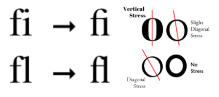
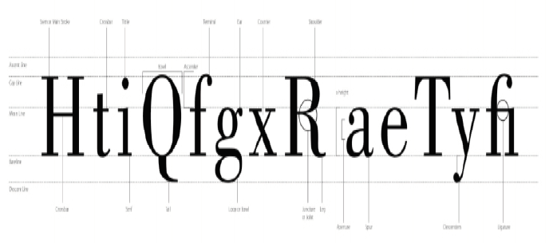

• Fontfamilie
Weights udgør tilsammen et typeface og kan f.eks. Være:
Arial regular
Arial italic
Arial bold
Arial bold italic
Arial black
Typografiske begreber
Minuskler = små bogstaver
Majuskler = store bogstaver (versaler eller blokbogstaver)
X-height = højden på minuskel x målt fra bundlinjen til toppen af bogstavet (godt til at parre typefaces)
Leading = linjeafstanden (måles fra bundlinje til bundlinje) - typisk bliver leading udregnet med 120-130% af skriftstørrelsen
Kerning vs. spacing = kerning betyder at afstanden mellem hvert bogstav kan justeres, så der skabes balance, her kan man altså justere pladsen mellem et par bogstaver af gangen. Spacing derimod er når pladsen mellem alle bogstaver bliver justeret på én gang.
Tracking = justerer den overordnede afstand mellem alle bogstaver i et ord, eller en længere markering af ord
Ligaturer (ligatures) er når 2 bogstaver bliver skubbet sammen (f.eks.) f og i og bliver til en enhed (se billede)
Stress inden for typografi er tykkelse stregen på bogstaver (se billede)

Fontklassifikationer
o Serif / antikva får navnet pga. sine fødder – det bliver ofte brugt som brødtekst, da fødderne gør en større mængde tekst letlæseligt, men bliver opfattet som gammeldags, og bruges derfor mindre og mindre.
o Sans serif / grotest – er uden fødder (navnet på fransk), bliver ofte benyttet til overskrifter, og den moderne stil giver en god kontrast til serif – bliver i højere grad benyttet som brødtekst på moderne websites, fremfor serif.

Til toppen